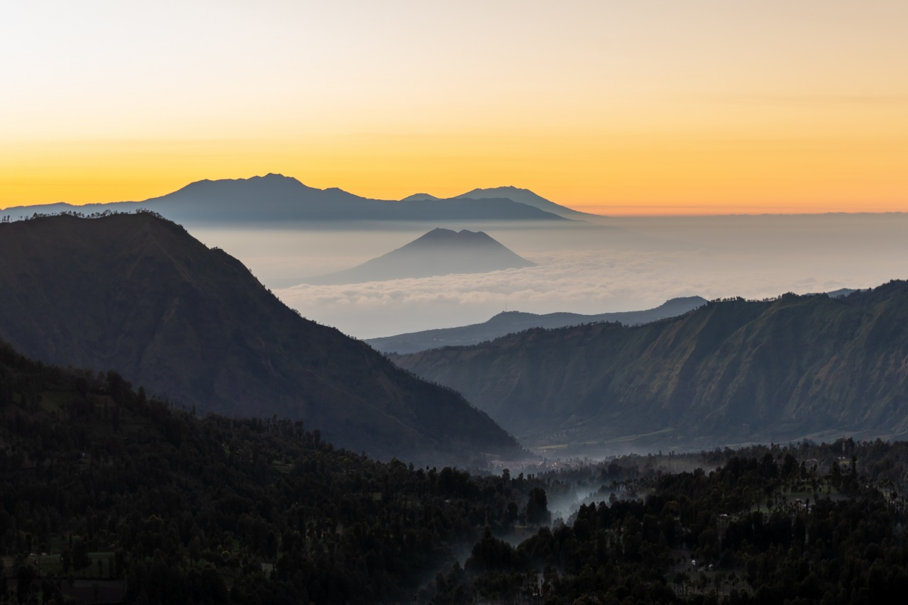

Tentang Gunung Argopuro
Gunung Argopuro terletak di Jawa Timur, dikenal sebagai jalur pendakian terpanjang di Pulau Jawa dengan panjang rute mencapai lebih dari 40 km. Gunung ini memiliki pesona hutan, savana, dan legenda yang memikat.
Pendaki akan melewati tempat ikonik seperti Danau Taman Hidup yang berkabut, Savana Cikasur bekas landasan Belanda, dan Puncak Rengganis yang sarat legenda.
Dengan ketinggian 3.088 mdpl, Argopuro bukan hanya tempat petualangan, tapi juga perjalanan spiritual dan alam yang menenangkan.
